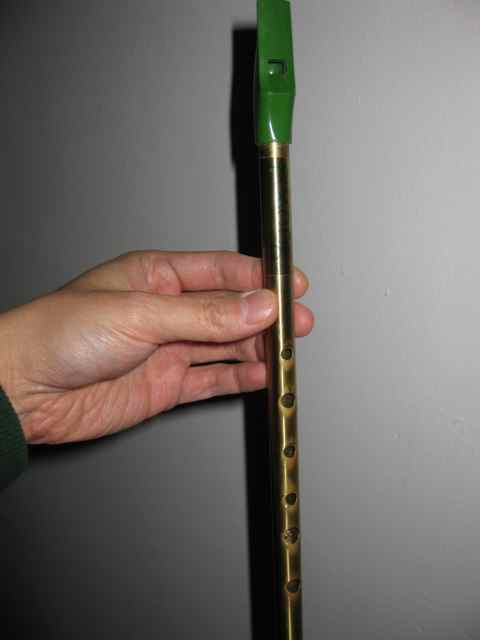

Yesterday I started playing the tin whistle for the first time ever!
This basic cheap Feadóg tin whistle is the one I am currently using (Abby picked it up at some point years ago while in Ireland, and I dug it out of a box in the basement yesterday).

Feadóg tin whistle
Why on earth am I playing this thing, which looks like a toy?
Today I’m going to begin exploring my central thesis that has been brewing in my mind in the past couple of years, which is that everyone should learn computer science.
Read a file of text, determine the n most frequently used words, and print out a sorted list of those words along with their frequencies.
Knuth came up with a typically clever, lengthy, low-level implementation. McIlroy then somewhat perversely wrote a six-line shell script that did the job, basically changing the subject away from literate programming and toward a critique of Knuth’s doing something low-level and complicated when unnecessary. The article publishing both Knuth’s and McIlroy’s solutions is available here. A followup article with David Hanson’s implementation in C is here.
I decided to bring the discussion here a quarter of a century (25 years!) to the present. How would we solve the problem now?
(Update of 2013-06-29)
I have changed my mind about many things I said here, and also have more clarifications and new arguments to make, which I will eventually post on my new programming blog, The Conscientious Programmer.
I’ve been thinking for a year or two now about my relationship with rice, in conjunction with reading about paleo diets. I’ve been eating rice, white or brown, for most of my life, and am now considering make some further changes to my diet (beyond giving up oatmeal for an entire month now).
As I mentioned on Sunday in introducing CSEdWeek, Saturday was the ambitious Global Day of CodeRetreat, whose local Pittsburgh edition I participated in, with around 50 of us total. The global event was held simultaneously in 90 cities and had around 2000 attendees. I had a great time, although I was totally exhausted by the time it was over (it lasted from before 9 AM to after 6 PM; what a way to spend a Saturday!).
What is CodeRetreat and what can you get out of it as a software developer?
Dec 5, 2011 · 3 minute read · Comments musicrecorderflutePhipps ConservatoryHoliday Ball
Tonight I left my office and walked across Flagstaff Hill to Phipps Conservatory to play some music with four other recorder players.
Phipps in evening from Flagstaff Hill At Phipps Sorry, no photos or videos of me playing, because I didn’t want to bother or confuse any Phipps visitors on how to use my camera! I did take a photo of the rest of us playing a piece that I did not participate in:
Read On →
This week (December 4 through 10, 2011) has been designed as Computer Science Education Week (CSEDWeek) by the US House of Representatives to recognize the importance of computer science education for students at all levels.
I am one of over 2000 people who have pledged online to participate in CSEdWeek. I will be blog about computation and the learning and teaching of it, in every context that I have experienced it.
Let me start by raising some questions about what is at stake.
Dec 2, 2011 · 2 minute read · Comments creativityCarnegie Mellon UniversityRon Placone
Yesterday at work, I participated in a brown bag seminar “Fostering Team Creativity” offered by CMU, taught by Ron Placone, whose seminar “Communicating Through Dialogue” back in October that I had found so useful.
Often, when we think of creativity, we think of creative individuals. There is growing interest, however, in the importance of team creativity to the overall success of organizations. This brown bag session will explore ways managers and team leaders can stimulate innovative work teams.
Read On →
Dec 1, 2011 · 4 minute read · Comments musicrecorderperformanceanxietyPittsburghflutemelodicaCarnegie Mellon UniversityPhipps Conservatory
My soprano, alto, tenor recorders Next week on Monday, I am to join a handful of local recorder players in playing holiday-themed music at a Candlelit Evening at Phipps Conservatory!
This will be my first time in public since I was a kid in band, and also my first time performing as part of such a small ensemble. It will be quite a new experience for me.
Read On →